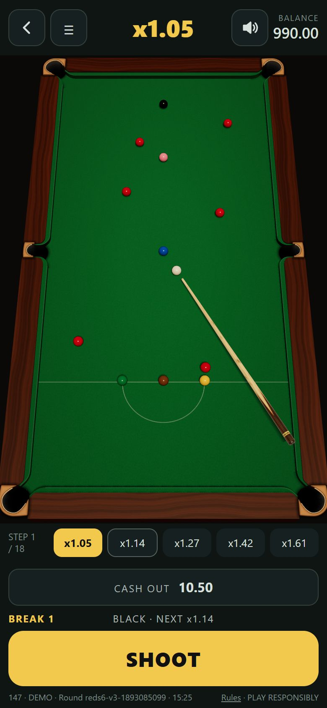
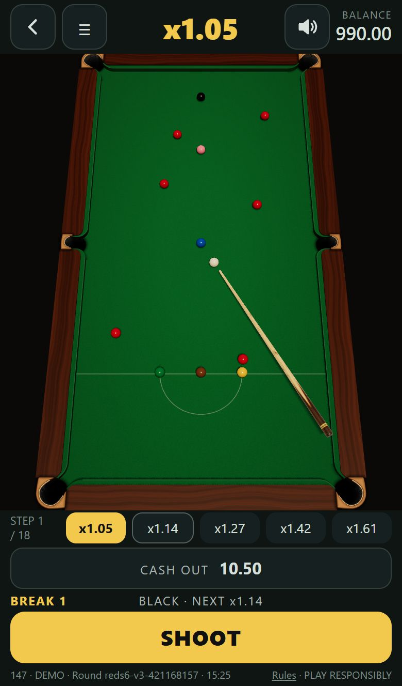
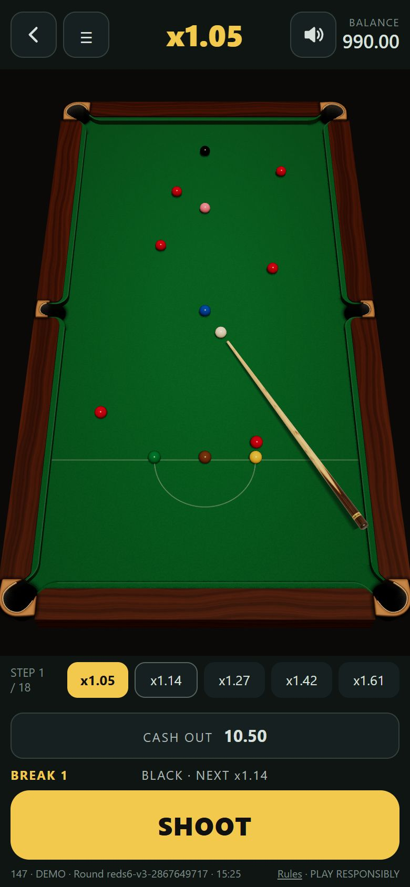
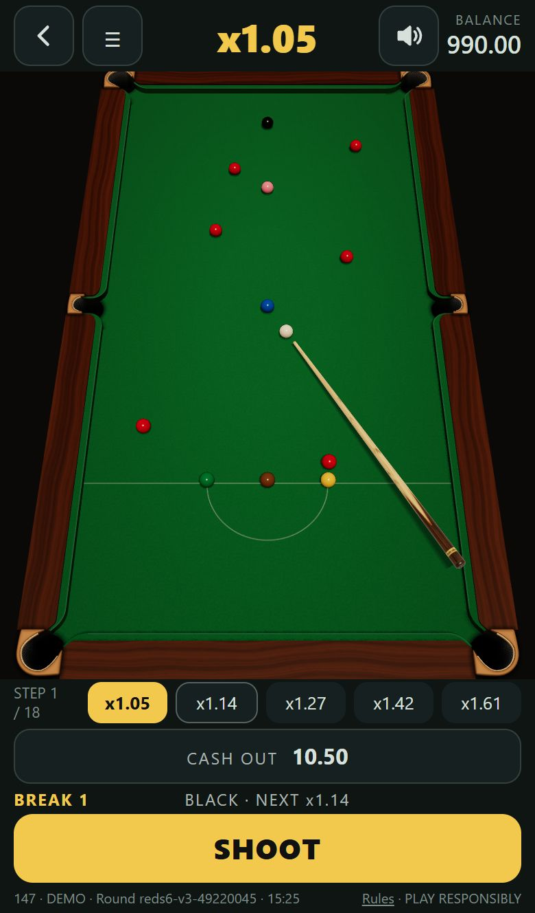
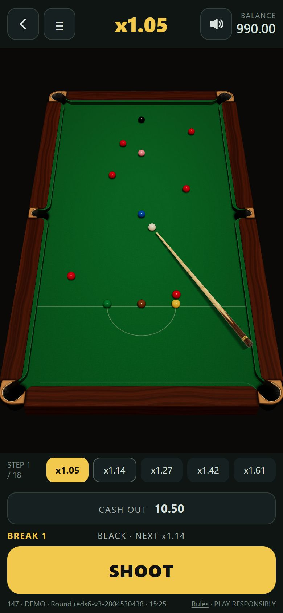
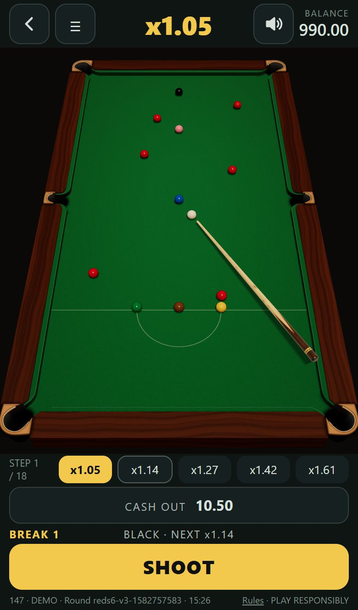
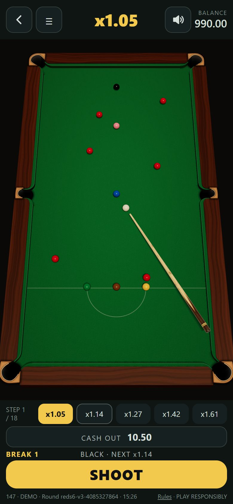
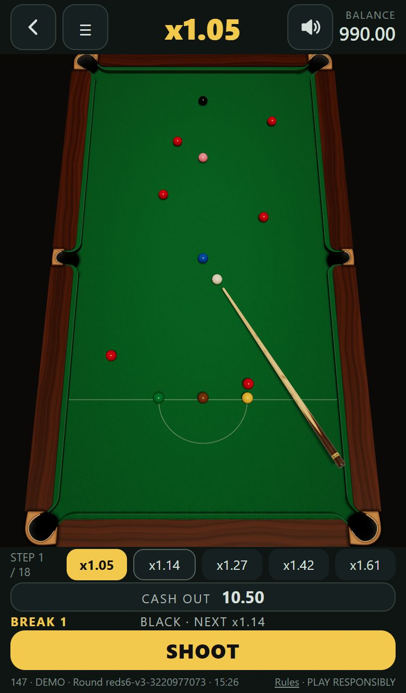

Camera angles: 4 options
Same frozen position in every picture: mid-round (step 1 played), 6 reds, colours on their spots,
cue ball near the blue. Real game look (look A, T1 pockets, cue C1, markings, full screen around the table).
Left: full screen 390×844. Right: in-app browser 390×664 (the size measured on 2026-11-27, where
the table is 80% wide today). The % is the table width (rails and pockets included) as a share of the screen
width. All 6 pockets are fully in view in every picture.
Note: on full screen the table is already 98% wide (limited by the width), so a lower camera cannot make it
wider there; it only makes the table shorter (height in px below).
Option 0 · today
Camera 64° above the cloth. Bottom area 144 px (112 px on a short screen). Nothing changed.


Option 1 · camera 7° lower
Camera 64° → 57° above the cloth. Bottom area unchanged.


Option 2 · camera 14° lower
Camera 64° → 50° above the cloth. Bottom area unchanged.


Option 3 · smaller bottom area
Camera unchanged (64°). Bottom area 144 → 104 px (short screen 112 → 84 px): smaller gaps, CASH OUT and SHOOT a little lower. About 40 px (28 px on a short screen) more for the table.

